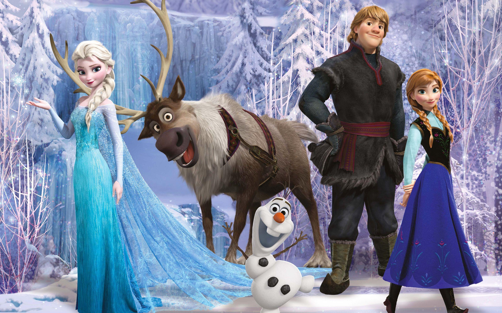

Story
When their kingdom becomes trapped in perpetual winter, fearless Anna (Kristen Bell) joins forces with mountaineer Kristoff (Jonathan Groff) and his reindeer sidekick to find Anna's sister, Snow Queen Elsa (Idina Menzel), and break her icy spell. Although their epic journey leads them to encounters with mystical trolls, a comedic snowman (Josh Gad), harsh conditions, and magic at every turn, Anna and Kristoff bravely push onward in a race to save their kingdom from winter's cold grip.
Characteristics
Elsa is the perfect mythic character – magical and larger than life. Grateful her kingdom now accepts her, she works hard to be a good queen. But deep down she can’t help but wonder why she was born with powers.